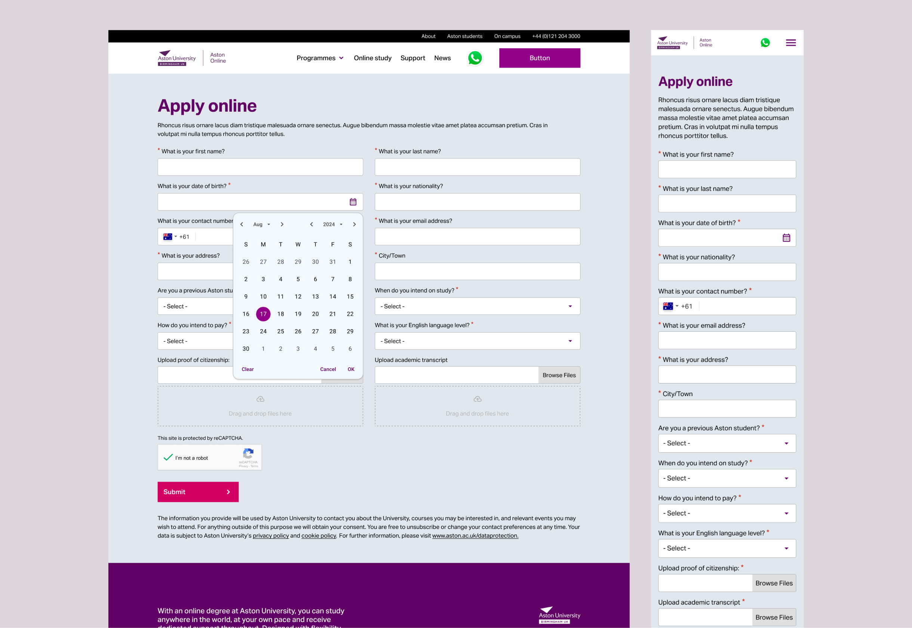
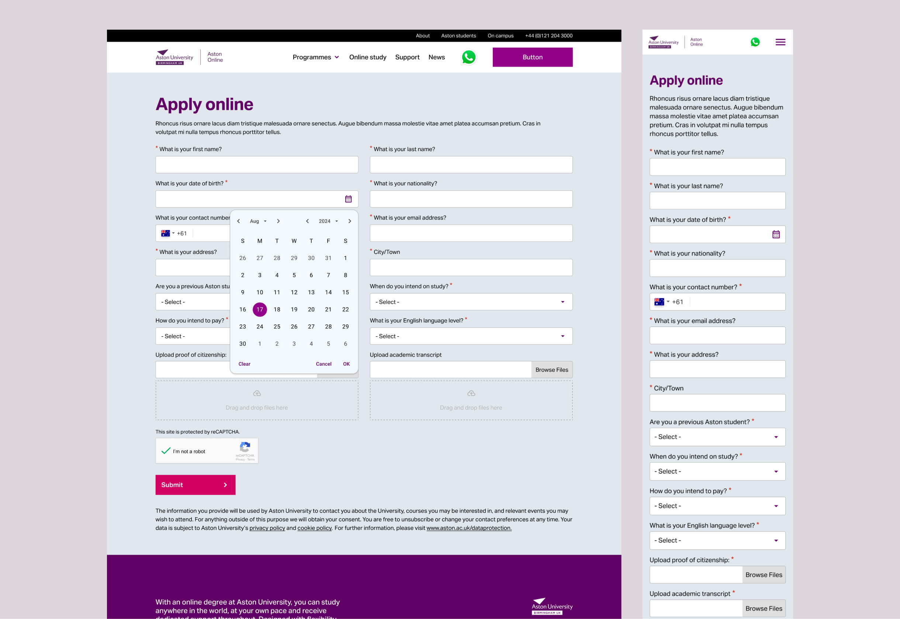

02 aston university online

2023
Lead Designer
Aston University needed to redesign its online learning platform to meet the growing demand for online education and attract more students pursuing higher education. The project aimed to deliver an engaging digital experience aligned with the university’s established brand identity and visual patterns. However, the lack of a developed design library posed a challenge, requiring a comprehensive build from the ground up.
The Aston Online platform was successfully redesigned and launched on schedule, aligning with stakeholder expectations and receiving full approval from the UK-based design team. The refreshed design opened up new opportunities for targeted marketing, improved user engagement, and increased conversion rates—strengthening Aston University’s presence across both its on-campus and online education offerings.


Discovery & Research
This foundational phase is about deeply understanding the context of the redesign. Begin by engaging stakeholders to clarify the goals behind the rebrand, uncover technical constraints, and align on success metrics. Equally important is conducting user research—this could involve usability testing on the current site, analysing analytics to identify drop-off points, or gathering qualitative insights to understand user pain points and expectations. Competitive analysis at this stage also helps reveal industry benchmarks and missed opportunities. The ultimate aim is to ensure you’re designing with purpose, informed by both user needs and business objectives.
Information Architecture & Content Strategy
With clear insights in place, the next step is to reframe how content is structured and experienced. Start with a comprehensive audit of existing content to determine what aligns with the new brand voice and what needs to be revised or retired. User journey mapping is essential to define the optimal flow through the site, helping you spot friction points and optimise paths to conversion. From there, develop a sitemap and low-fidelity wireframes that prioritise content hierarchy and create logical, intuitive navigation. This step bridges strategy with structure, ensuring users find what they need—quickly and confidently.
UI Design & Prototyping
This is where the new branding is translated into a tangible, interactive experience. The UI design phase should start with building or adapting a design system that reflects the updated brand—this includes defining typography, colour schemes, iconography, and interaction patterns in a way that’s consistent, accessible, and flexible. High-fidelity mockups are then created to express the final visual direction, ensuring that every component not only looks polished but also feels cohesive across devices. Once visual designs are solidified, interactive prototypes are developed for usability testing. This helps validate the new direction with real users before moving into development, reducing risk and reinforcing design decisions with evidence.
 

UX/UI DESIGNER
Harry is a UX/UI designer who crafts intuitive, high-performance websites that align with business goals. With expertise in UX research, wireframing, prototyping, and UI design, he creates seamless, user-focused experiences.
His superpower is the ability to deeply understand business needs and translate them into effective design solutions, supported by a structured workflow. He is business-driven, with a strong focus on critical reviews, iteration, and design systems to ensure the delivery of high-quality design outcomes.